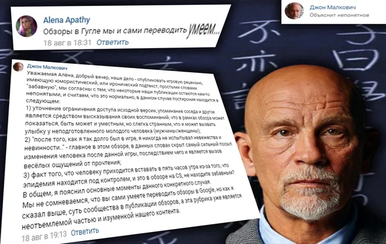
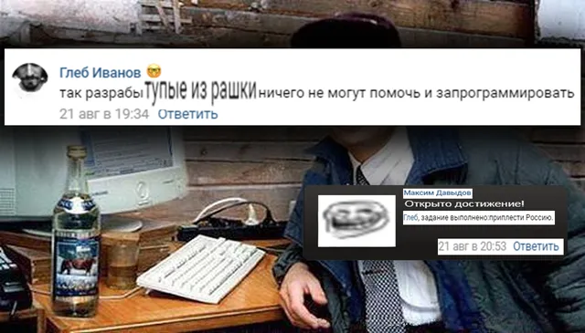
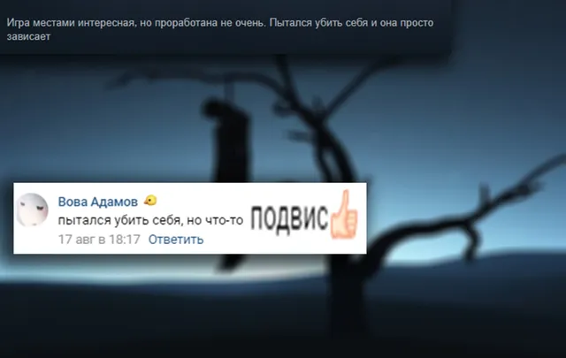
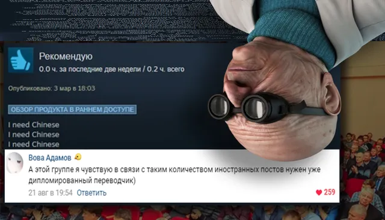
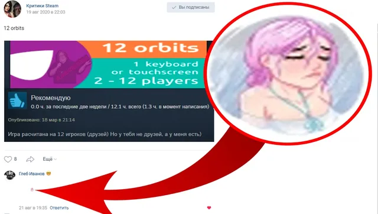

Ваши комментарии
ВКонтакте
🐘Что ж, прошла очередная неделя - пришло время ваших комментариев, на этой недел…
23 августа 2020 · №409 в выгрузке стены · оригинал во ВКонтакте ↗






#ВашиКомментарии@criticssteam #6
🐘Что ж, прошла очередная неделя - пришло время ваших комментариев, на этой неделе их было не очень много, однако оставить вас без этой замечательной рубрики мы не могли, встречайте новый выпуск!
Сегодня [https://vk.com/@criticssteam-sistema-titulov|титул Комментатора] получают:
[id119602395|Вова Адамов]
[id604226045|Alena Apathy]
[id191917835|Глеб Иванов]
[id563265102|Максим Давыдов]
-------------
✍🏻 Пишите больше!
🐘Что ж, прошла очередная неделя - пришло время ваших комментариев, на этой неделе их было не очень много, однако оставить вас без этой замечательной рубрики мы не могли, встречайте новый выпуск!
Сегодня [https://vk.com/@criticssteam-sistema-titulov|титул Комментатора] получают:
[id119602395|Вова Адамов]
[id604226045|Alena Apathy]
[id191917835|Глеб Иванов]
[id563265102|Максим Давыдов]
-------------
✍🏻 Пишите больше!